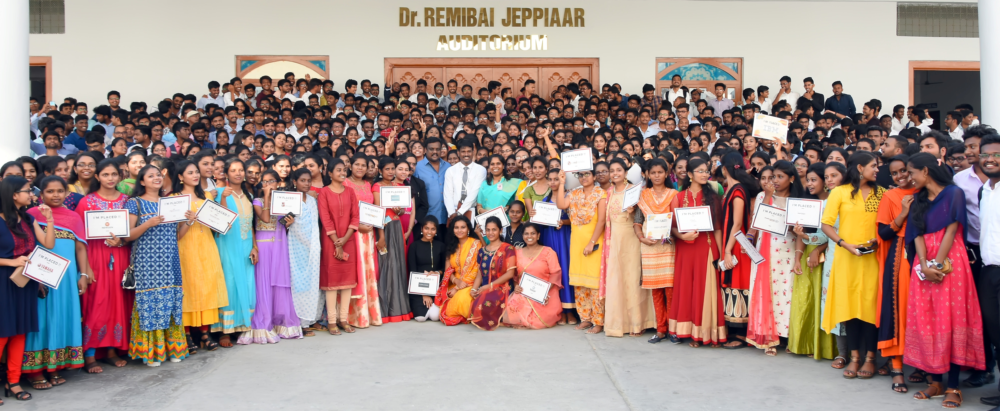

Sathyabama is a prestigious institution which excels in the fields of Engineering, Science and Technology for
more than three successful decades. It offers multi-disciplinary academic programmes in various fields of
Engineering, Science, Technology, law, Dental Science, Pharmacy, Nursing, Management, Arts and Science and
Allied Health Sciences. It is established under Sec.3 of UGC Act, 1956 and is been Accredited with ‘A’ Grade by
the National Accreditation and Assessment council. The Institution persistently seeks and adopts innovative
methods to improve the quality of higher education and is responsive to the changes taking place in the field of
education on a global scale. The Institution has a team of dynamic and outstanding faculty, innovative
pedagogical practices , state of the art infrastructure and world class Research Facilities. This glorious
Institution is functioning under the dynamic leadership of Dr. Mariazeena Johnson, Chancellor, Dr. Marie
Johnson, President, Mr. J. Arul Selvan Vice President and Ms. Maria Bernadette Tamilarasi, Vice President.
Sathyabama has a good presence in rankings and ratings at National and International level. The Institution has
been ranked in 40th position by the National Institutional Ranking Framework (NIRF), Government of India among
the Universities in India for the year 2021 and ranked one among the top 50 Universities for six consecutive
years. Sathyabama is ranked among the Top 5 Institutions in the Country for Innovation by ATAL ranking of
Institution for Innovation Achievements, Govt. of India. Times Higher Education and QS has ranked Sathyabama
among the top Institutions worldwide. Sathyabama Institute of Science & Technology has alliances with leading
Universities and research establishments at National and International Level. It is a research intensive
University with world class laboratories and research facilities and is involved in research in the emerging
areas of Science and Technology. Sathyabama has undertaken various sponsored and collaborative R&D projects
funded by National and International Organizations. Sathyabama has written a special page in the history of
space research on 22nd June 2016 with the launch of “SATHYABAMASAT” in association with ISRO.
Sathyabama has emerged as a leading Institution and achieved excellence in higher education to international
standards owing to its research and academic excellence.
Admissions
Sathyabama is a prestigious institution which excels in the fields of Engineering, Science and Technology for
more than three successful decades. It offers multi-disciplinary academic programmes in various fields of
Engineering, Science, Technology, law, Dental Science, Pharmacy, Nursing, Management, Arts and Science and
Allied Health Sciences. It is established under Sec.3 of UGC Act, 1956 and is been Accredited with ‘A’ Grade by
the National Accreditation and Assessment council. The Institution persistently seeks and adopts innovative
methods to improve the quality of higher education and is responsive to the changes taking place in the field of
education on a global scale. The Institution has a team of dynamic and outstanding faculty, innovative
pedagogical practices , state of the art infrastructure and world class Research Facilities. This glorious
Institution is functioning under the dynamic leadership of Dr. Mariazeena Johnson, Chancellor and Dr. Marie
Johnson, President.
Sathyabama has a good presence in rankings and ratings at National and International level. The Institution has
been ranked in 39th position by the National Institutional Ranking Framework (NIRF), Government of India among
the Universities in India for the year 2020 and ranked one among the top 50 Universities for five consecutive
years. Sathyabama is ranked among the Top 5 Institutions in the Country for Innovation by ATAL ranking of
Institution for Innovation Achievements, Govt. of India. Times Higher Education and QS has ranked Sathyabama
among the top Institutions worldwide. Sathyabama Institute of Science & Technology has alliances with leading
Universities and research establishments at National and International Level. It is a research intensive
University with world class laboratories and research facilities and is involved in research in the emerging
areas of Science and Technology. Sathyabama has undertaken various sponsored and collaborative R&D projects
funded by National and International Organizations. Sathyabama has written a special page in the history of
space research on 22nd June 2016 with the launch of “SATHYABAMASAT” in association with ISRO.
Sathyabama has emerged as a leading Institution and achieved excellence in higher education to international
standards owing to its research and academic excellence.
Research
Centre for Research at Sathyabama Institute of Science and Technology (Deemed to be University) offers PhD
Programme ( Internal / External ). Research is offered in multivarious branches of Engineering, Technology and
in Science and Humanities. This centre provides research opportunities to the aspiring candidates serving in
Educational Institutions / Industries / Research Organizations / Research Laboratories and Government
Departments. Centre for Research encourages scholars to have collaborative projects with the University. It is
offering admission twice a year. This centre functions with full commitment towards Research and Development of
societal importance with the enthusiasm to serve the community.
Oerview
Our Placement Cell acts as a bridge for our students and recruiters. It monitors the employment opportunities in
various domains and invites the recruiters for campus recruitment of final year students at our Institute.
Students are enhanced with niche skills as expected by various Industries. It is very successful in maintaining
high and consistent placement statistics over the years. Our recruiters’ list is growing every year as the
performance of our students in the companies is highly rated. The On-Campus recruitment program keeps continuing
till the end of their final semester. We also support our students with Off Campus Recruitment.

IQAC
INTERNAL QUALITY ASSURANCE CELL(IQAC)
Quality Sustenance and Quality Enhancement are the two key words reverberating in most institutions of higher
learning today.
NAAC is the organization that assesses and accredits institutions of Higher Education in India (HEI).
NAAC is an autonomous body funded by UGC, Government of India, MHRD headquartered in Bangalore.
NAAC insists that every accredited institution should establish an Internal Quality Assurance Cell (IQAC) as a
"Post - Accreditation Quality Sustenance" measure and should exercise long term objectives.
And in this context, NAAC pushes every HEI to encompass a "Proactive and Functional IQAC" in its system